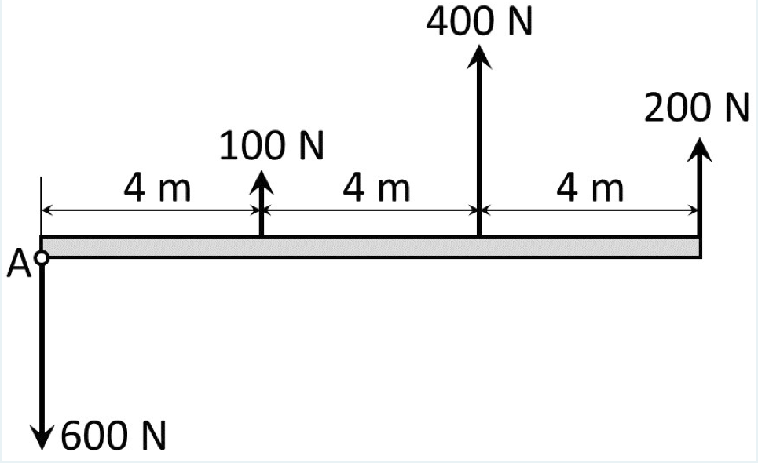
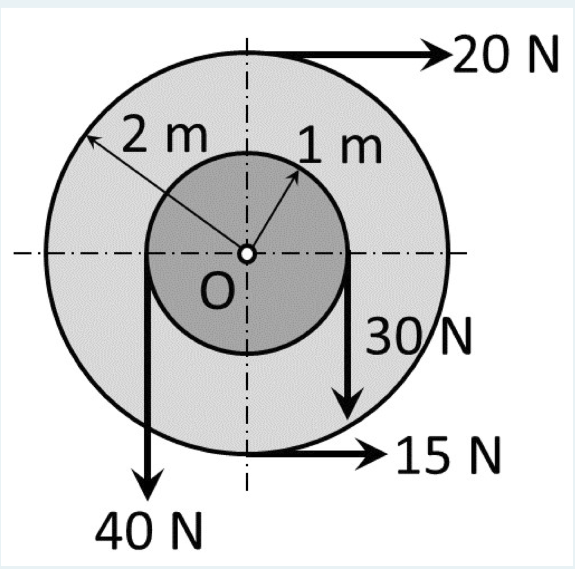
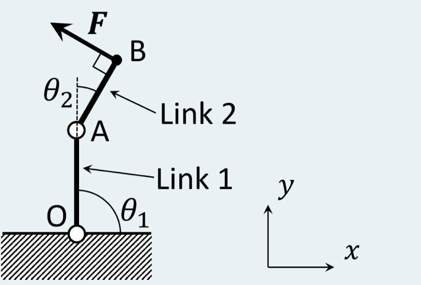

2026/10/6／第2回「モーメント」の Moodle 小テスト（課題 2A、全4問）。各問を、教材の解き方の手順①〜⑥で解き直したもの。
A force of 20 N at 30 degree from the $x$-axis is acting at the point (5, −4) m. Using Varignon's theorem, determine the moment of the force about the origin.
（訳：$x$ 軸から 30° の向きの 20 N の力が点 (5, −4) m に働く。バリニオンの定理を使って、原点まわりのモーメントを求めよ。）解答欄：モーメントの大きさ（正の値）[N·m]、向き。
解答
① 切り出す：力は1本、基準点は原点 O、着力点は Q(5, −4)。
② 座標軸：問題の $x$, $y$ 軸をそのまま使う。反時計回りを＋。
③ 成分で書く：力は $x$ 軸から 30° なので（第1回の成分分解） $$F_x=20\cos30^\circ=20\times0.8660=17.32\ \mathrm N,\qquad F_y=20\sin30^\circ=20\times0.5=10.00\ \mathrm N$$ 位置ベクトルは基準点 → 着力点：$\boldsymbol r=(5-0,\ -4-0)=(5,\ -4)$ m。
④ バリニオンの定理で式を立てる：力 $\boldsymbol F$ のモーメントは、分力 $F_x$ と $F_y$ のモーメントの和に等しい（教材 3.3節）。
・$F_y$（上向き 10 N）：作用線は $x=5$ の鉛直線で、腕は $|r_x|=5$ m。O の右を上に押すので反時計回り：$+F_yr_x=+10.00\times5=+50.00$ N·m。
・$F_x$（右向き 17.32 N）：作用線は $y=-4$ の水平線で、腕は $|r_y|=4$ m。O の下を右に押すので反時計回り：$-F_xr_y=-17.32\times(-4)=+69.28$ N·m。
⑤ 解く：$M=50.00+69.28=119.28\ \mathrm{N\cdot m}$。成分の式 (3.4) $M=F_yr_x-F_xr_y=10\times5-17.32\times(-4)$ に一度に代入しても同じ値になる。
⑥ 確かめ：単位は N × m = N·m。符号は正なので反時計回り。どちらの分力も反時計回りに回すので、和が正になるのは図の感覚とも合う。
答え：大きさ 119.3 N·m（119.28）、向き：反時計回り
図のように、梁に垂直な複数の力が作用している。これらを点Aにおける単一の力とモーメントに置き換えなさい。

解答欄：力の大きさ（正の値）[N]、力の向き、モーメントの大きさ（正の値）[N·m]、モーメントの向き。
解答
① 切り出す：梁全体に働く4本の力を、点 A に集める（教材 5.3節）。
② 座標軸：A を原点とし、梁に沿って右を $x$、上を $y$ とする。反時計回りを＋。
③ 成分で書く：すべて鉛直な力なので $F_x=0$。着力点は A から見て $\boldsymbol r=(x_i,\ 0)$。
| 力 | $x_i$ [m] | $F_{iy}$ [N] | $M_i=F_{iy}x_i$ [N·m] |
|---|---|---|---|
| 600 N（下） | 0 | −600 | 0 |
| 100 N（上） | 4 | +100 | +400 |
| 400 N（上） | 8 | +400 | +3200 |
| 200 N（上） | 12 | +200 | +2400 |
| 合計 | +100 | +6000 |
④ 式を立てる：合力は式 (5.2)、合モーメントは式 (5.3) を使う。$r_y=0$ なので (3.4) の $-F_xr_y$ の項は消え、$M_i=F_{iy}x_i$ だけが残る。 $$F_y=\sum F_{iy}=-600+100+400+200,\qquad M_A=\sum F_{iy}x_i=(-600)(0)+100(4)+400(8)+200(12)$$
⑤ 解く：$F_y=+100$ N、$M_A=0+400+3200+2400=+6000$ N·m。
⑥ 確かめ：600 N は A を通るので腕 0 で、モーメントには効かない（作用線が基準点を通る）。上向きの3本はどれも A の右を上に押すので、すべて反時計回りになる。単位は N と N·m。
答え：力 100 N・上向き、モーメント 6000 N·m・反時計回り
図のような、連結されたプーリーに掛けられたベルトに作用する力が、点Oに与える力とモーメントを求めなさい。ただし、ベルトは垂直または水平のいずれかの状態であるとする。力は大きさと作用方向を答えなさい。

解答欄：力の大きさ（正の値）[N]、力の向き（水平方向から反時計まわりに）[degree]、モーメントの大きさ（正の値）[N·m]、モーメントの向き。
図の読み取り（本解説の前提）：ベルトはプーリーに接する向きに引っ張るので、着力点は接点にとればよい。
・20 N：外側（半径 2 m）の上端で接し、右向き。
・15 N：外側の下端で接し、右向き。
・40 N：内側（半径 1 m）の左端で接し、下向き。
・30 N：内側の右端で接し、下向き。
解答
① 切り出す：連結された2つのプーリーを1つの剛体とみて、4本のベルトの力を点 O に集める。
② 座標軸：O を原点とし、右を $x$、上を $y$ とする。反時計回りを＋。
③ 成分で書く：鉛直なベルトの着力点は、作用線上のどの点にとってもよい（教材 3.4節の確かめ(b)）。ここでは接点（$y=0$）にとる。
| 力 | 着力点 $\boldsymbol r$ [m] | $\boldsymbol F$ [N] | $M_i=F_yr_x-F_xr_y$ [N·m] |
|---|---|---|---|
| 20 N | (0, 2) | (20, 0) | $0-20\times2=-40$ |
| 15 N | (0, −2) | (15, 0) | $0-15\times(-2)=+30$ |
| 40 N | (−1, 0) | (0, −40) | $(-40)(-1)-0=+40$ |
| 30 N | (1, 0) | (0, −30) | $(-30)(1)-0=-30$ |
| 合計 | (35, −70) | 0 |
④ 式を立てる：合力は式 (5.2)、合モーメントは式 (5.3)。 $$F_x=20+15=35\ \mathrm N,\qquad F_y=-40-30=-70\ \mathrm N,\qquad M_O=-40+30+40-30$$
⑤ 解く：
・大きさ：$F=\sqrt{F_x^2+F_y^2}=\sqrt{35^2+70^2}=\sqrt{1225+4900}=\sqrt{6125}=35\sqrt5=78.26$ N。
・向き：$\tan\alpha=F_y/F_x=-70/35=-2$ で、$F_x\gt0$、$F_y\lt0$（右下、第4象限）なので $\alpha=\tan^{-1}(-2)=-63.43^\circ$。水平から反時計回りに測ると $360^\circ-63.43^\circ=296.57^\circ$。
・モーメント：$M_O=0$ N·m。
⑥ 確かめ：外側のベルトは、上の 20 N が時計回りに 40、下の 15 N が反時計回りに 30 で、差し引き時計回りに 10 N·m。内側のベルトは、左の 40 N が反時計回りに 40、右の 30 N が時計回りに 30 で、差し引き反時計回りに 10 N·m。2つが打ち消し合って 0 になる。つまり、このプーリーを回そうとする働きはつり合っていて、軸 O には「押す力」だけがかかる。
答え：力 78.3 N（78.26）、向き：水平から反時計回りに 296.6°（＝右下へ 63.4°）、モーメント 0 N·m
図のように、ロボットアームの先端Bに大きさ 18 N の力 $\boldsymbol F$ が作用している。このとき、アームの基部Oに作用する力とモーメントを求めなさい。ただし、リンク1、2の長さをそれぞれ 0.4 m、0.3 m、角度 $\theta_1$、$\theta_2$ をそれぞれ 90度、30度 とする。

解答欄：力ベクトルの $x$ 成分 [N]、$y$ 成分 [N]、モーメントの大きさ（正の値）[N·m]、モーメントの向き。
解答
① 切り出す：アーム全体（リンク1＋リンク2）を1つの物体とみて、先端 B の力を基部 O に移す（教材 5.1・5.2節）。
② 座標軸：O を原点とし、図の $x$（右）、$y$（上）をそのまま使う。反時計回りを＋。
③ 位置と力を成分で書く：
・A：$\theta_1=90^\circ$ なのでリンク1は真上を向き、$\mathrm A=(0,\ 0.4)$ m。
・リンク2の向き：鉛直から右へ 30° 傾いているので、単位ベクトルは $\boldsymbol u=(\sin30^\circ,\ \cos30^\circ)=(0.5000,\ 0.8660)$。
・B：$\mathrm B=\mathrm A+0.3\,\boldsymbol u=(0.3\times0.5000,\ 0.4+0.3\times0.8660)=(0.1500,\ 0.6598)$ m。
・$\boldsymbol F$ の向き：リンク2に垂直で左上向きなので、$\boldsymbol u$ を反時計回りに 90° 回したベクトル（教材 2.2節：$(a_x,a_y)\to(-a_y,a_x)$）$\boldsymbol u^{\perp}=(-0.8660,\ 0.5000)$ の向きになる。
$$\boldsymbol F=18\,\boldsymbol u^{\perp}=(-18\times0.8660,\ 18\times0.5000)=(-15.59,\ 9.000)\ \mathrm N$$
④ 式を立てる：O に移すと、力はそのまま $\boldsymbol F$、それにモーメント $M_O=F_yr_x-F_xr_y$（式 5.1）が付く。ここで $\boldsymbol r=\overrightarrow{\mathrm{OB}}=(0.1500,\ 0.6598)$。
⑤ 解く： $$M_O=9.000\times0.1500-(-15.59)\times0.6598=1.350+10.29=11.64\ \mathrm{N\cdot m}$$
⑥ 確かめ（別の計算）：$\overrightarrow{\mathrm{OB}}=\overrightarrow{\mathrm{OA}}+\overrightarrow{\mathrm{AB}}$ に分け、外積の分配法則（教材 式2.5(iii)）を使う。
・$\overrightarrow{\mathrm{AB}}\times\boldsymbol F$：$\boldsymbol F$ はリンク2に垂直なので、腕はリンク2の長さそのもの。$\boldsymbol F$ は $\overrightarrow{\mathrm{AB}}$ から見て反時計回り側にあるので $+0.3\times18=+5.400$。
・$\overrightarrow{\mathrm{OA}}\times\boldsymbol F=0\times9.000-0.4\times(-15.59)=+6.235$（$=0.4\times18\cos30^\circ$）。
・和：$5.400+6.235=11.64$ N·m で一致する。$\boldsymbol F\cdot\boldsymbol u=(-15.59)(0.5)+(9.000)(0.866)=0$ なので、リンク2に垂直であることも確かめられる。単位は N と N·m、有効数字は4桁。
答え：$F_x=-15.6$ N（−15.59）、$F_y=9.00$ N、モーメント 11.6 N·m（11.64）・反時計回り